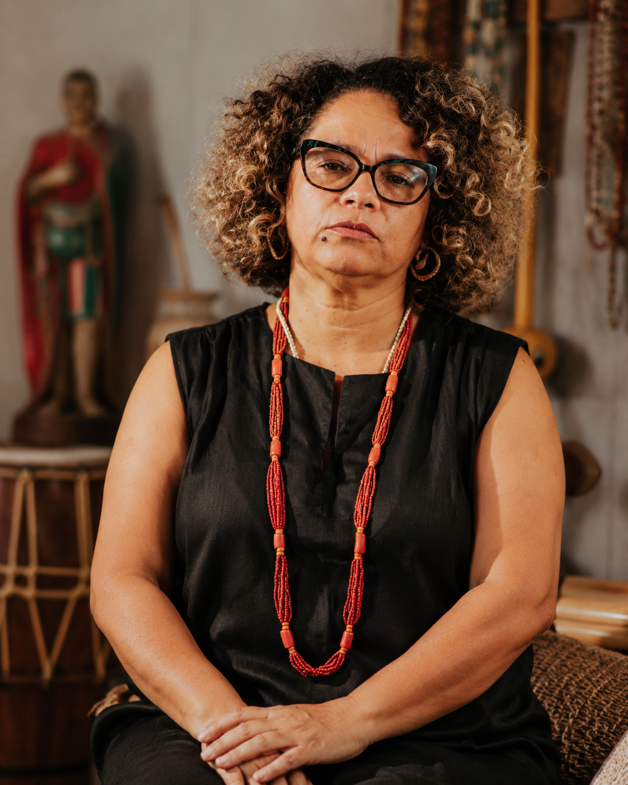

I · Mestra · Capoeira
MestraCarla Mara
Associação Zumbi Capoeira · Grande Bom Jardim
Mulher, capoeirista, umbandista, educadora. Entrou na roda há quase quatro décadas, quando ali quase só havia homens, e decidiu ficar. Coordena, na AZC, os coletivos feminino e LGBTQIA+.
"A roda é pra quem chega, mas é também pra quem fica."
#ParaTodosVerem
Retrato fotográfico de Mestra Carla Mara. Mulher negra parda de meia-idade, olhar firme e direto para a câmera. Usa vestes brancas, indumentária associada à capoeira e à umbanda. A composição valoriza sua presença e autoridade como guardiã de quase quatro décadas de tradição no Grande Bom Jardim.
38
Anos de
capoeira
capoeira
AZC
Associação
Zumbi
Zumbi
CE
Tesouro
Vivo
Vivo